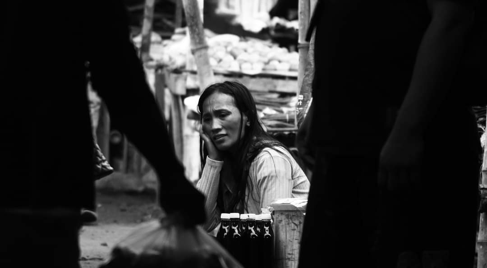
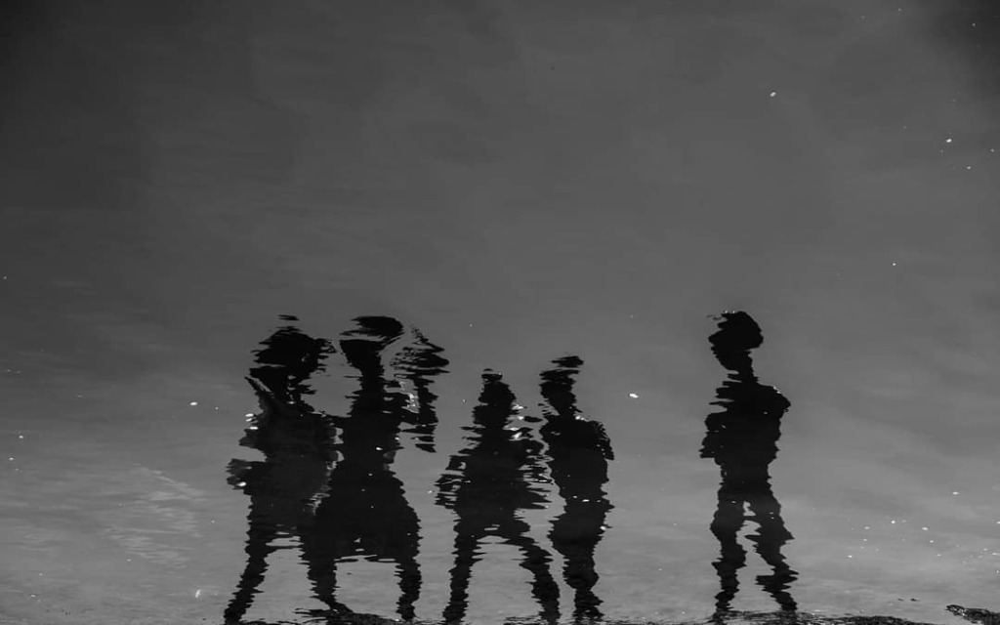
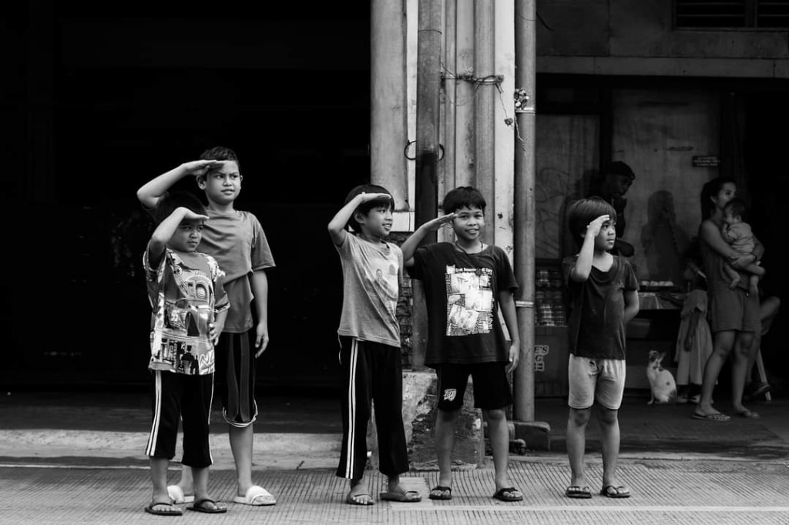
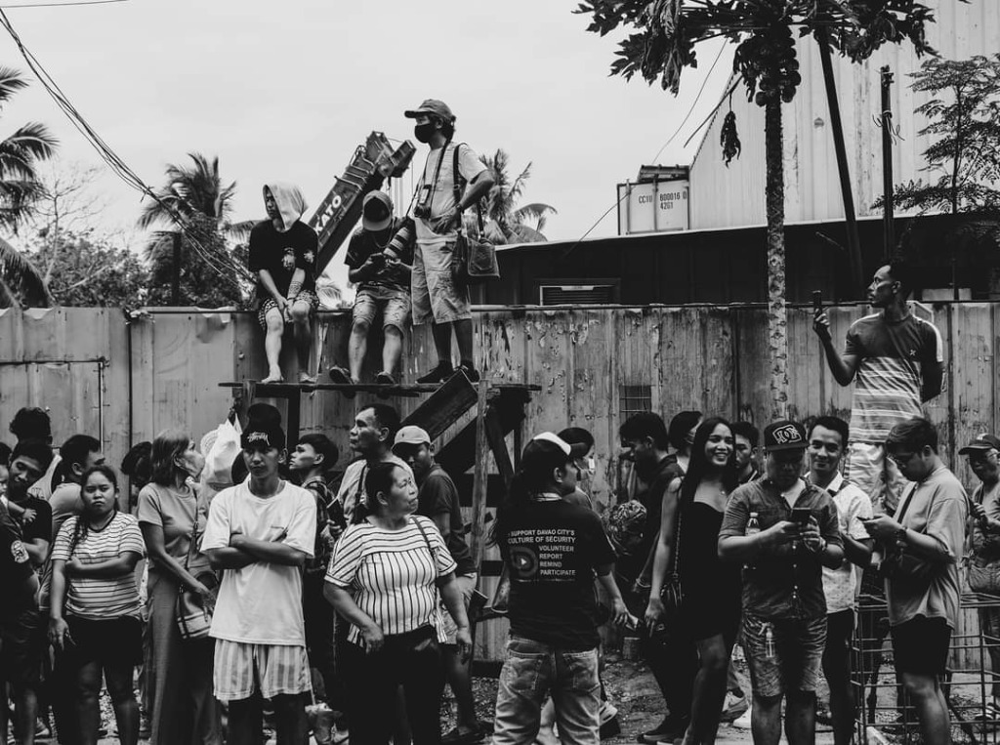
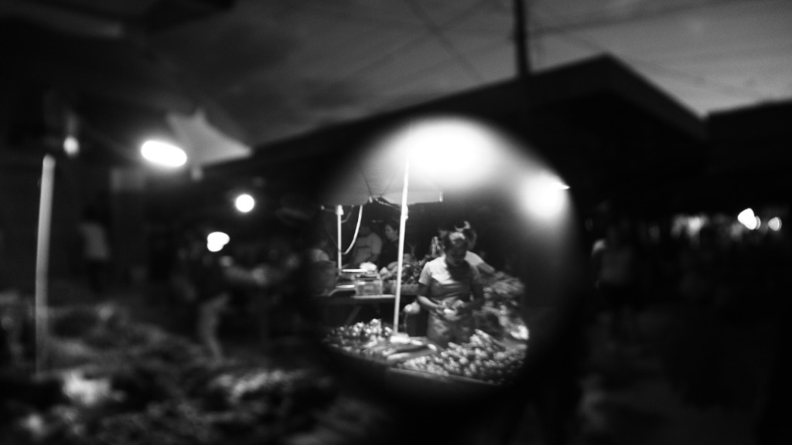
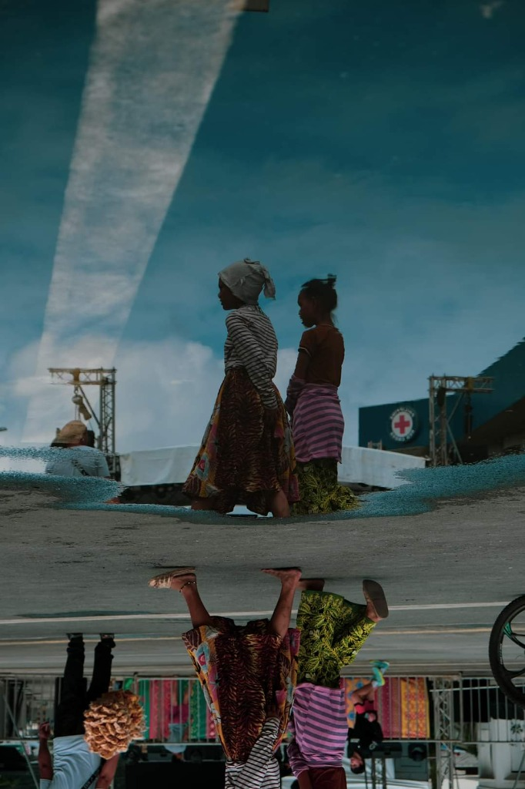
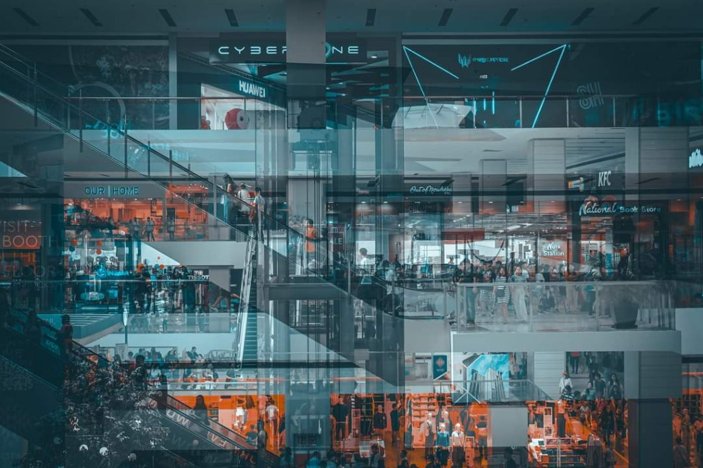
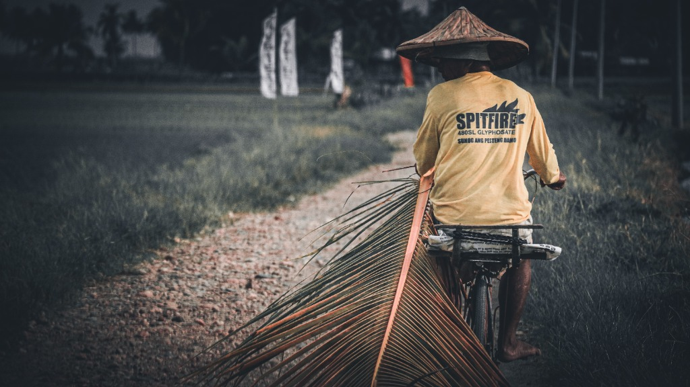
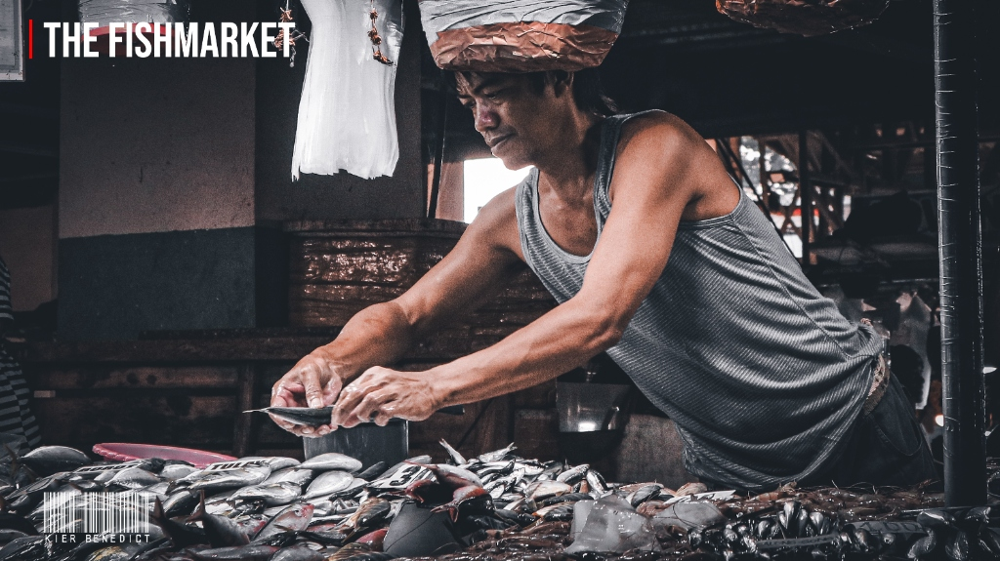
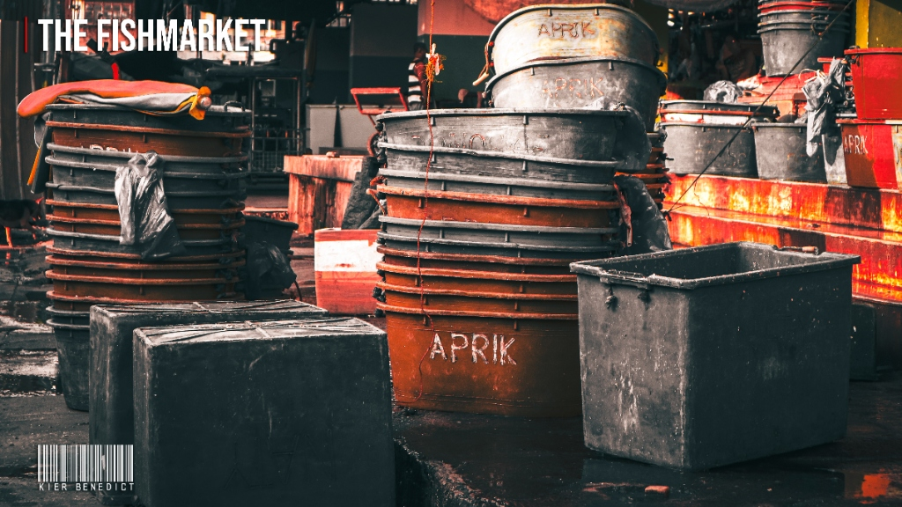

Pensive Market Hours
High-contrast street portrait of a market vendor resting in contemplation, framed between passing urban silhouettes.
Street photography focused on honest moments, city rhythm, and everyday light.

High-contrast street portrait of a market vendor resting in contemplation, framed between passing urban silhouettes.

Abstract monochrome study capturing the undulating water reflections of five figures along the shoreline.

Heartwarming street capture of five young boys standing in a line along the sidewalk, raising simultaneous salutes.

Wide documentary street frame capturing an expectant crowd, perched photographers, and the collective anticipation of a public spectacle.

Atmospheric night street study framing a produce vendor under single-point tungsten lighting through a circular lens aperture.

Creative inverted street perspective capturing two young girls reflected across a rainwater puddle beneath a sweeping sky.

Multilayered architectural reflection creating an intricate glass matrix of shoppers, escalators, and commercial neon lights.

Evocative rural documentary of a farmer in a traditional salakot hat navigating a countryside trail on bicycle, dragging a palm frond.

Striking environmental portrait of a fishmonger working with focused precision over fresh catches in the morning market.

Tactile environmental still life capturing weathered fish tubs, ice containers, and wet concrete after the morning rush.